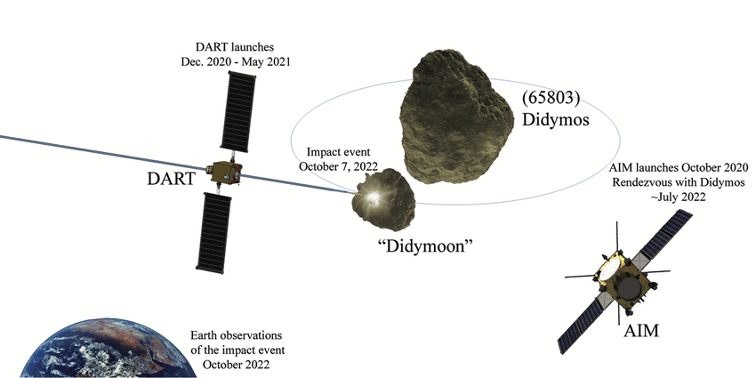
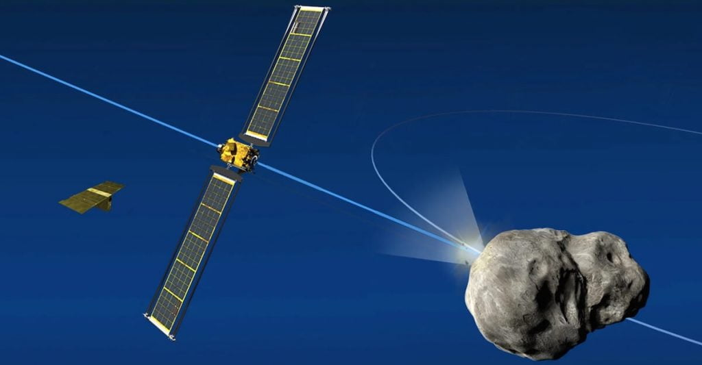
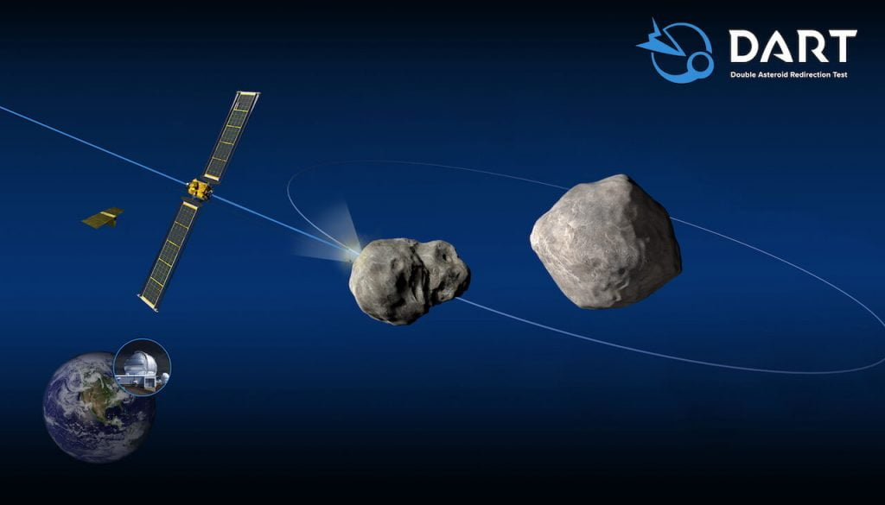
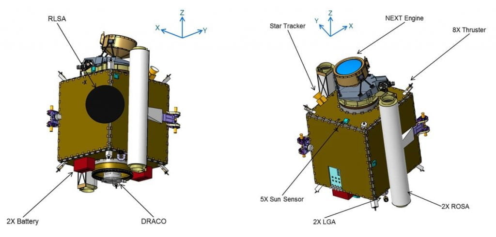
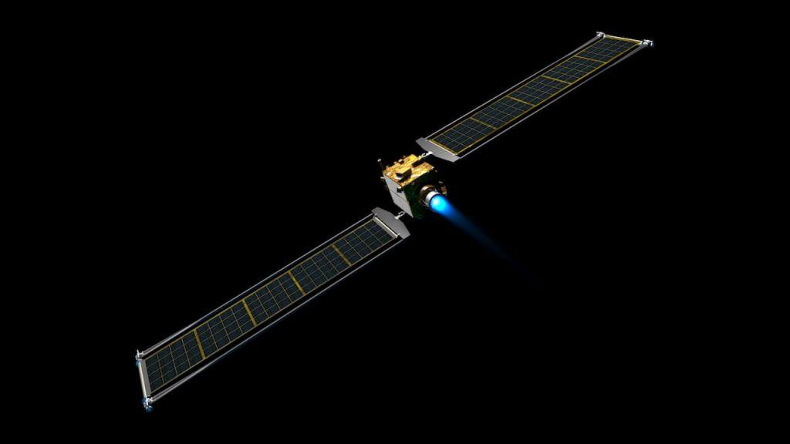

အခု ရရှိတဲ့ အချက်အလက်တွေအရ DART Mission အာကာသယာဉ်ဟာ Dimorphos ဂြိုဟ်သိမ်ရဲ့ ပတ်လမ်းကြောင်းကို အောင်မြင်စွာ ပြောင်းလဲ နိုင်ခဲ့တယ်လို့ ဆိုပါတယ်။ ဒါဟာ လူ့သမိုင်းမှာ ပထမဆုံး အကြိမ်အဖြစ် ဥက္ကာခဲ တစ်ခုရဲ့လမ်းကြောင်းကို အောင်မြင်စွာ ပြောင်းလဲနိုင်ခဲ့တာပဲ ဖြစ်ပါတယ်။
“ကျွန်တော်တို့ အားလုံးမှာ မိခင် ကမ္ဘာမြေကို ကာကွယ်ဖို့ တာဝန် ရှိပါတယ်။ ပြောရရင် ဒီကမ္ဘာက ကျွန်တော်တို့အတွက် တစ်ခုတည်းသော ပိုင်ဆိုင်မှု ဖြစ်ပါတယ်” လို့ နာဆာရဲ့ ဦးဆောင်သူ Bill Nelson က ရှင်းပြပါတယ်။

ဒီ DART Mission မတိုင်မီက Dimorphos ရဲ့ ပတ်ဖို့ကြာချိန် ၁၁ နာရီ ၅၅ မိနစ် ကြာပါတယ်။ ဒါဟာ Dimorphos က သူ့ထက် ပိုကြီးတဲ့ Didymos ဂြိုဟ်သိမ်ကို တစ်ပတ် ပတ်မိဖို့ ကြာတဲ့ အချိန် ဖြစ်ပါတယ်။

ဒီ ရလဒ်ရဲ့ မှန်ကန်မှုဟာ ၂ မိနစ် အတွင်း ရှိတယ်လို့ ဆိုပါတယ်။ (Margin of uncertainty plus or minus 2 minutes)။ ဆိုလိုတာက တကယ့် အဖြေမှန်ကနေ အလွန်ဆုံး ကွာရင် ၂ မိနစ်ထက် ပိုမကွာဘူးလို့ ဆိုလိုတာ ဖြစ်ပါတယ်။

DART mission ရဲ့ ရလဒ်ကို လေ့လာမှုဟာ အဆုံးသတ်တော့ မဟုတ် သေးပါဘူး။ ဒီ ဂြိုဟ်သိမ်နဲ့ ပတ်သက်တဲ့ အချက်အလက် အသစ်တွေ နေ့စဉ်နဲ့ အမျှ ဝင်ရောက် လာနေတာမို့ ပညာရှင် တွေဟာ ဒီ အချက်အလက် တွေကို ဆက်လက် လေ့လာနေကြဆဲ ဖြစ်ပါတယ်။ ဒီ ရလဒ် တွေကနေ နောင်တချိန် ကမ္ဘာကို ဦးတည်လာတဲ့ ဥက္ကာခဲတွေ ရှာဖွေ တွေ့ရှိ ခဲ့လို့ရှိရင် ဘယ်လို လမ်းကြောင်း လွှဲရမလဲ ဆိုတာနဲ့ ပတ်သက်တဲ့ အလွန် တန်ဖိုးရှိတဲ့ အချက်အလက် တွေကို ရရှိနိုင်မှာ ဖြစ်ပါတယ်။

ဒီ ဝင်ဆောင့်လိုက်ရာက ထွက်လာတဲ့ အမှုန်အမွှားတွေဟာ ဂြိုဟ်သိမ်ကို ဒုံးပျံ အင်ဂျင် တစ်လုံးကဲ့သို့ တွန်းအားပေးမှုကို ဖြစ်ပေါ်စေတယ်လို့ ပညာရှင် တွေက ယူဆ ကြပါတယ်။ ဒီ တွန်းအားကြောင့် မူလ ခန့်မှန်း ထားတာထက် ပိုမြန်တဲ့ အရှိန်ကို ဖြစ်ပေါ်စေပြီး သူ့ရဲ့ ပတ်လမ်းကြာချိန် ကလဲ ခန့်မှန်းချက်ထက် ပိုပြီး တိုတောင်းသွားတာ ဖြစ်နိုင်တယ်လို့ ယူဆ ကြပါတယ်။
ဒီလို ဝင်တိုက်မှုကြောင့် လမ်းကြောင်း အနည်းငယ် ပြောင်းသွားပေမယ့် ဒီ ဥက္ကာခဲ တွေဟာ ကမ္ဘာကိုတော့ ဘာအန္တရာယ်မှ ဖြစ်ပေါ်စေမှာ မဟုတ်ဘူးလို့ နာဆာက ပြောပါတယ်။
